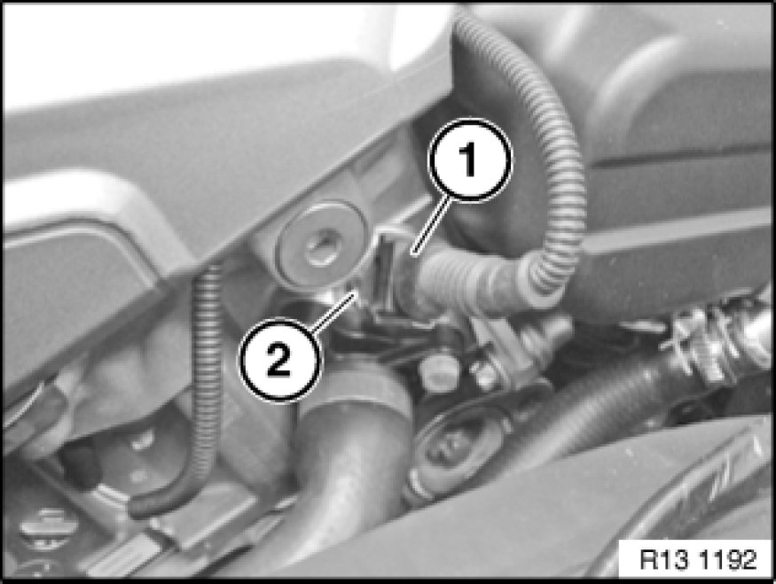

Coolant Temperature Sensor/Switch (For Computer): Service and Repair
13 62 531 - Replacing coolant temperature sensor (N52/N52K/N53)

Warning!
Danger of scalding!
Only perform these tasks on an engine that has cooled down.

Recycling
Catch and dispose of escaping coolant.
Observe country-specific waste-disposal regulations.

Necessary preliminary tasks:
- Read out fault memory of DME control unit
- Switch off ignition
- Remove intake duct

Coolant temperature sensor is mounted on cylinder head at front.
Unlock plug (1) and remove.
Release temperature sensor (2).
Installation Note:
Tightening torque, 13 62 2AZ 13 62 Senders for Control Unit.
If necessary, top up coolant.
Check cooling system Component Tests and General Diagnostics for leaks.

Note:
Now clear the fault memory.